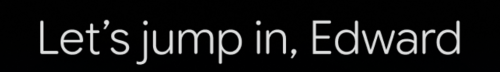
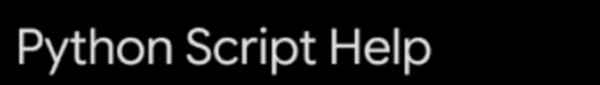

A redesign of the Gemini home screen for iOS, built on a full recreation of the app. The generic prompt row becomes two suggestion stacks that read the time of day and the work already in progress.
That is the whole opening screen. The prompts are the same set on every phone.
The greeting uses your first name and nothing else.
Nothing here suggests the app can read a photograph or write working code.
Every session passes through this screen. Most of it is blank.
From
How might the home screen offer better suggested prompts?
To
How might the home screen use what the app already knows?
One takes the prompt row as given. The other asks what the screen is for.
Gemini runs on its own kit rather than Material Design, so almost nothing came from a library. None of it shows in the redesign, and all of it had to exist first.
Google Sans Flex. I drew the characters as vectors rather than substitute something close.
Corner rounding and stroke weight are most of what makes it feel like this product.
Apple's kit does not carry the ones on my phone. Both built from scratch.
Left to right in the order a session happens, with the redesigned home screen in place.


Scroll or drag sideways to follow the flow
Drawing it at full size turned my opinions into arguments I could check.
The idea
A control opens the code block fullscreen, with the chat input still reachable.
Why it stayed out
A long line is still a long line. Past a point you are panning again.
I built the fix before I questioned it. It is a better version of the same compromise, not a different answer to it.


The idea
Landscape gives a long line the wide edge, so the eye travels down the script.
Why it stayed out
Almost nobody reads code on a phone by choice.
I still think it is the better way to read code on a phone. I had not asked who does that. People review code at a desk.
Noticing a problem and proving it is worth solving are two separate tests. I had been treating them as one.
I watched classmates open their assistants instead of asking them how they use them. Almost nobody read the prompts.
Counted off the product, not from a study.
Reading them costs more than typing the question already in your head.
People return to a thread, but finding it means remembering it exists.
The hour, the place, the last conversation. None of it reaches the first screen.
The most valuable space on the screen was being scrolled past on the way somewhere else.
Whatever replaced the prompt row would take more space than it did. Three rules decided what could fill it.
Only worth reading if it beats the question you were already going to type.
Anything pasted on top would be a redesign in my voice, not a change to this product.
The stacks take room from the text field. Every card needs a reason to be there.
Gemini has no public kit, so I rebuilt its type, colour, icons and components in Figma before adding anything, then extended that system for the stacks.



Left, the type and colour of the recreation, every specimen a crop of it at one shared scale. Right, the Figma file the whole kit comes out of.
The greeting stays. Below it, two labelled stacks instead of one prompt row. The left reads the moment, the right picks up work in progress. Four cards each.


Each card carries a reason, not a category. Shibam Coffee on Centre Avenue, closing at eleven. The Python thread and the thing left to learn in it.
The option
A flat fill would have been easier to read and sat plainly on top of the screen.
The decision
Glass, so the gradient Gemini already runs stays visible through the card.
A flat fill fought that gradient and made the cards look pasted on. Glass is harder to keep legible and it is what makes the addition belong here.
The same screen at three moments. Neither stack waits for the other.
The fullscreen code view was a real improvement and still the wrong thing to spend a redesign on. Rebuilding the app first is what let me tell Gemini's decisions apart from its unused space.
If I kept going I would design for when the context is wrong. A suggestion that misreads the moment is worse than none.